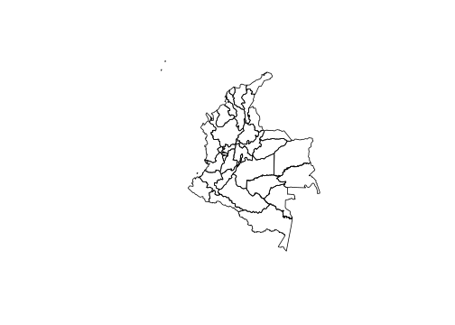

2.3 Instalación de rgee
Descargar e instalar anaconda o conda. (https://www.anaconda.com/products/individual)
Abrir Anaconda prompt y configurar ambiente de trabajo (ambiente python rgee_py) con las siguientes sentencias:
conda create -n rgee_py python=3.9
activate rgee_py
pip install google-api-python-client
pip install earthengine-api
pip install numpy- Listar los ambientes de Python disponibles en anaconda prompt
conda env list- Una vez identificado la ruta del ambiente ambiente rgee_py definirla en R (no se debe olvidar cambiar \ por /).
- Instalar
reticulateyrgee, cargar paquetes para procesamiento espacial y configurar el ambiente de trabajo como sigue:
library(reticulate) # Conexión con Python
library(rgee) # Conexión con Google Earth Engine
library(sf) # Paquete para manejar datos geográficos
library(dplyr) # Paquete para procesamiento de datos
rgee_environment_dir = "C://Users//sguerrero//Anaconda3//envs//rgee_py//python.exe"
# Configurar python (Algunas veces no es detectado y se debe reiniciar R)
reticulate::use_python(rgee_environment_dir, required=T)
rgee::ee_install_set_pyenv(py_path = rgee_environment_dir, py_env = "rgee_py")
Sys.setenv(RETICULATE_PYTHON = rgee_environment_dir)
Sys.setenv(EARTHENGINE_PYTHON = rgee_environment_dir)- Una vez configurado el ambiente puede iniciarlizarse una sesión de Google Earth Engine como sigue:
rgee::ee_Initialize(drive = T)
Notas:
Se debe inicializar cada sesión con el comando
rgee::ee_Initialize(drive = T).Los comandos de javascript que invoquen métodos con “.” se sustituyen por signo peso ($), por ejemplo:
ee.ImageCollection().filterDate() # Javascript
ee$ImageCollection()$filterDate() # R2.3.1 Descargar información satelital
- Paso 1: disponer de los shapefile
# shape <- read_sf("Shape/COL_dam2.shp")
shape <- read_sf("Recursos/Día1/Sesion3/Shape/COL.shp")
plot(shape["geometry"])
- Paso 2: Seleccionar el archivo de imágenes que desea procesar, para nuestro ejemplo luces nocturnas.
luces <- ee$ImageCollection("NOAA/DMSP-OLS/NIGHTTIME_LIGHTS") %>%
ee$ImageCollection$filterDate("2013-01-01", "2014-01-01") %>%
ee$ImageCollection$map(function(x) x$select("stable_lights")) %>%
ee$ImageCollection$toBands()- Paso 3: Descargar la información
## Tiempo 10 minutos
shape_luces <- map(unique(shape$dam),
~tryCatch(ee_extract(
x = luces,
y = shape["dam"] %>% filter(dam == .x),
ee$Reducer$mean(),
sf = FALSE
) %>% mutate(dam = .x),
error = function(e)data.frame(dam = .x)))
shape_luces %<>% bind_rows()
tba(shape_luces, cap = "Promedio de luces nocturnasa")Repetir la rutina para:
Tipo de suelo: crops-coverfraction (Porcentaje de cubrimiento cultivos) y urban-coverfraction (Porcentaje de cobertura urbana) disponibles en https://develoGTMs.google.com/earth-engine/datasets/catalog/COGTMNICUS_Landcover_100m_Proba-V-C3_Global#description
Tiempo de viaje al hospital o clínica más cercana (accessibility) y tiempo de viaje al hospital o clínica más cercana utilizando transporte no motorizado (accessibility_walking_only) información disponible en https://develoGTMs.google.com/earth-engine/datasets/catalog/Oxford_MAP_accessibility_to_healthcare_2019
Modificación humana, donde se consideran los asentamiento humano, la agricultura, el transporte, la minería y producción de energía e infraestructura eléctrica. En el siguiente link encuentra la información satelital https://develoGTMs.google.com/earth-engine/datasets/catalog/CSP_HM_GlobalHumanModification#description
Paso 4 consolidar la información.
| dam | luces_nocturnas | cubrimiento_cultivo | cubrimiento_urbano | modificacion_humana | accesibilidad_hospitales | accesibilidad_hosp_caminado |
|---|---|---|---|---|---|---|
| 05 | 2.3809 | 1.2755 | 0.6900 | 0.2947 | 181.1119 | 420.4946 |
| 08 | 13.0102 | 9.7734 | 4.7396 | 0.4943 | 28.2639 | 154.5701 |
| 11 | 21.5163 | 9.7879 | 19.8337 | 0.5509 | 60.7259 | 267.8848 |
| 13 | 1.9374 | 1.9246 | 0.6285 | 0.2911 | 216.2115 | 501.9515 |
| 15 | 2.6495 | 13.8033 | 0.5758 | 0.2965 | 115.8310 | 309.3832 |
| 17 | 4.4541 | 2.5939 | 0.8696 | 0.3639 | 62.2349 | 228.6569 |
| 18 | 0.0877 | 0.2771 | 0.0456 | 0.1248 | 1218.6141 | 2505.8205 |
| 19 | 1.4020 | 4.0623 | 0.3414 | 0.2231 | 214.3356 | 406.7882 |
| 20 | 2.6586 | 10.6343 | 0.4973 | 0.3349 | 99.1499 | 365.6516 |
| 23 | 2.2205 | 10.5568 | 0.5211 | 0.3331 | 141.3763 | 441.9516 |
Los resultados se muestran en los siguientes mapas